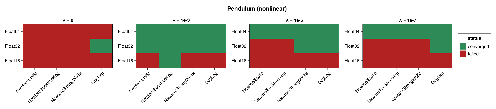
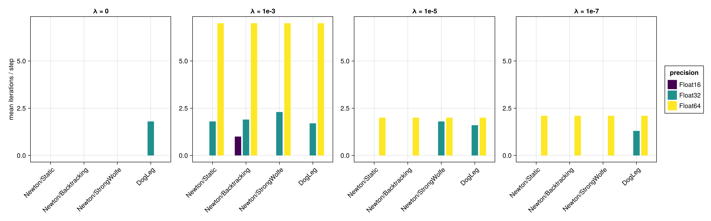
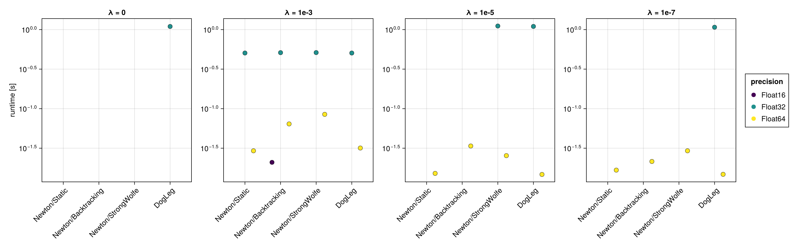
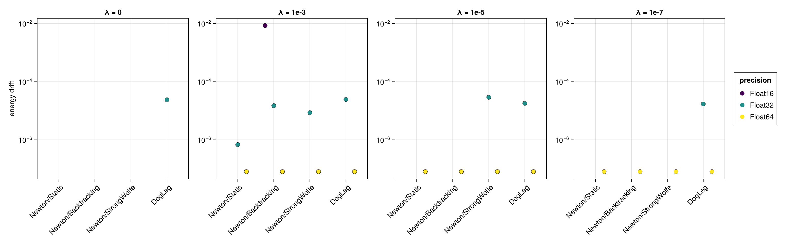
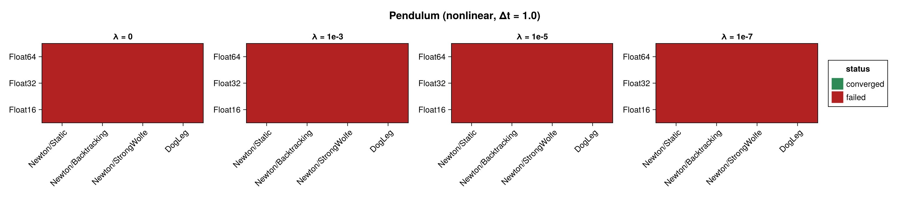
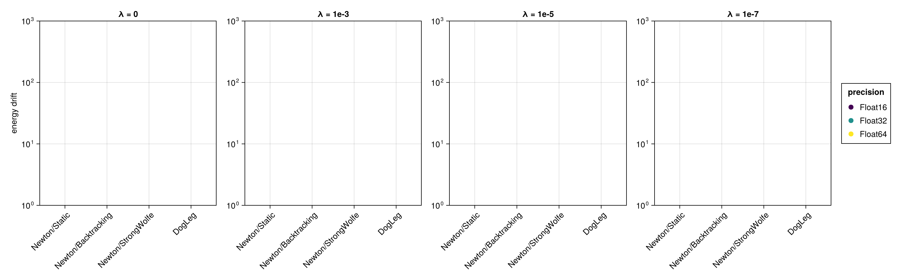

Pendulum (Nonlinear Integrator)
The mathematical pendulum benchmarked with the NonLinear_OneLayer_GML integrator (see Harmonic Oscillator (Nonlinear Integrator) for the network setup and the meaning of the regularization sweep). GeometricProblems.Pendulum provides no Lagrangian (lodeproblem) form, so its two-dimensional phase-space iodeproblem is used — the state is q = [angle, momentum], and the energy $H(\text{angle}, \text{momentum})$ is evaluated from both components. The pendulum is nonlinear, so it exercises the solves more than the harmonic oscillator. No closed-form solution is used; accuracy is assessed through the energy drift.
The figures panel by the regularization factor $\lambda$; solver configurations are on the x-axis and precisions are distinguished by colour. Results are shown at $\Delta t = 0.1$ and repeated for $\Delta t = 1.0$ and $\Delta t = 10.0$ (ten steps each).
using SolverBenchmark
spec = pendulum_lode_spec(timespan = (0.0, 1.0), timestep = 0.1)
df = run_nonlinear_benchmark(spec; timing = :quick, max_iterations = 100,
verbose = false, quiet = true)┌ Warning: You should only use `Gradient` together with array expressions! Maybe you wanted to use `SymbolicPullback`.
└ @ SymbolicNeuralNetworks ~/.julia/packages/SymbolicNeuralNetworks/FCFV3/src/derivatives/gradient.jl:72
┌ Warning: You should only use `Gradient` together with array expressions! Maybe you wanted to use `SymbolicPullback`.
└ @ SymbolicNeuralNetworks ~/.julia/packages/SymbolicNeuralNetworks/FCFV3/src/derivatives/gradient.jl:72
┌ Warning: You should only use `Gradient` together with array expressions! Maybe you wanted to use `SymbolicPullback`.
└ @ SymbolicNeuralNetworks ~/.julia/packages/SymbolicNeuralNetworks/FCFV3/src/derivatives/gradient.jl:72
┌ Warning: You should only use `Gradient` together with array expressions! Maybe you wanted to use `SymbolicPullback`.
└ @ SymbolicNeuralNetworks ~/.julia/packages/SymbolicNeuralNetworks/FCFV3/src/derivatives/gradient.jl:72
┌ Warning: You should only use `Gradient` together with array expressions! Maybe you wanted to use `SymbolicPullback`.
└ @ SymbolicNeuralNetworks ~/.julia/packages/SymbolicNeuralNetworks/FCFV3/src/derivatives/gradient.jl:72
┌ Warning: You should only use `Gradient` together with array expressions! Maybe you wanted to use `SymbolicPullback`.
└ @ SymbolicNeuralNetworks ~/.julia/packages/SymbolicNeuralNetworks/FCFV3/src/derivatives/gradient.jl:72Convergence
plot_convergence(df; panelcol = :regularization, title = "Pendulum (nonlinear)")
Nonlinear iterations
plot_iterations(df; panelcol = :regularization)
Run time
plot_runtime(df; panelcol = :regularization)
Energy drift
plot_energy_drift(df; panelcol = :regularization)
Discussion
- As for the harmonic oscillator, a nonzero regularization factor is required: with $\lambda = 0$ the Newton iteration stalls, while $\lambda > 0$ converges in a handful of iterations, conserving the energy to $\approx 10^{-8}$ at
Float64. - The pendulum's nonlinearity means the solve needs a few more iterations per step than the (linear) oscillator.
Float16fails (singular Newton Jacobian), as it does throughout the nonlinear study.
Results table
markdown_table(summary_table(df; panelcol = :regularization))| precision | solver_label | regularization | converged | iterations_mean | runtime_s | max_residual | energy_drift |
|---|---|---|---|---|---|---|---|
| Float16 | Newton/Static | λ = 0 | ✗ | — | — | — | — |
| Float16 | Newton/Static | λ = 1e-3 | ✗ | — | — | — | — |
| Float16 | Newton/Static | λ = 1e-5 | ✗ | — | — | — | — |
| Float16 | Newton/Static | λ = 1e-7 | ✗ | — | — | — | — |
| Float16 | Newton/Backtracking | λ = 0 | ✗ | — | — | — | — |
| Float16 | Newton/Backtracking | λ = 1e-3 | ✓ | 1 | 0.021 | 0.184 | 0.00854 |
| Float16 | Newton/Backtracking | λ = 1e-5 | ✗ | — | — | — | — |
| Float16 | Newton/Backtracking | λ = 1e-7 | ✗ | — | — | — | — |
| Float16 | Newton/StrongWolfe | λ = 0 | ✗ | — | — | — | — |
| Float16 | Newton/StrongWolfe | λ = 1e-3 | ✗ | 31.1 | 1.57 | 0.903 | — |
| Float16 | Newton/StrongWolfe | λ = 1e-5 | ✗ | — | — | — | — |
| Float16 | Newton/StrongWolfe | λ = 1e-7 | ✗ | — | — | — | — |
| Float16 | DogLeg | λ = 0 | ✗ | — | — | — | — |
| Float16 | DogLeg | λ = 1e-3 | ✗ | — | — | — | — |
| Float16 | DogLeg | λ = 1e-5 | ✗ | — | — | — | — |
| Float16 | DogLeg | λ = 1e-7 | ✗ | — | — | — | — |
| Float32 | Newton/Static | λ = 0 | ✗ | — | — | — | — |
| Float32 | Newton/Static | λ = 1e-3 | ✓ | 1.8 | 0.506 | 2.35e-05 | 6.85e-07 |
| Float32 | Newton/Static | λ = 1e-5 | ✗ | — | — | — | — |
| Float32 | Newton/Static | λ = 1e-7 | ✗ | — | — | — | — |
| Float32 | Newton/Backtracking | λ = 0 | ✗ | 32.6 | 1.52 | 7.89e-05 | — |
| Float32 | Newton/Backtracking | λ = 1e-3 | ✓ | 1.9 | 0.511 | 2.7e-05 | 1.5e-05 |
| Float32 | Newton/Backtracking | λ = 1e-5 | ✗ | 13.4 | 1.27 | 3.26e-05 | — |
| Float32 | Newton/Backtracking | λ = 1e-7 | ✗ | 26 | 1.39 | 0.000111 | — |
| Float32 | Newton/StrongWolfe | λ = 0 | ✗ | 41.2 | 1.53 | 0.0145 | — |
| Float32 | Newton/StrongWolfe | λ = 1e-3 | ✓ | 2.3 | 0.512 | 2.98e-05 | 8.61e-06 |
| Float32 | Newton/StrongWolfe | λ = 1e-5 | ✓ | 1.8 | 1.11 | 2.99e-05 | 2.91e-05 |
| Float32 | Newton/StrongWolfe | λ = 1e-7 | ✗ | 36.4 | 1.19 | 4.19e+07 | — |
| Float32 | DogLeg | λ = 0 | ✓ | 1.8 | 1.1 | 2.93e-05 | 2.4e-05 |
| Float32 | DogLeg | λ = 1e-3 | ✓ | 1.7 | 0.505 | 2.49e-05 | 2.47e-05 |
| Float32 | DogLeg | λ = 1e-5 | ✓ | 1.6 | 1.1 | 3.04e-05 | 1.81e-05 |
| Float32 | DogLeg | λ = 1e-7 | ✓ | 1.3 | 1.07 | 2.99e-05 | 1.72e-05 |
| Float64 | Newton/Static | λ = 0 | ✗ | — | — | — | — |
| Float64 | Newton/Static | λ = 1e-3 | ✓ | 7 | 0.0293 | 3.32e-14 | 8.05e-08 |
| Float64 | Newton/Static | λ = 1e-5 | ✓ | 2 | 0.0152 | 3.71e-14 | 8.05e-08 |
| Float64 | Newton/Static | λ = 1e-7 | ✓ | 2.1 | 0.0167 | 4.03e-14 | 8.05e-08 |
| Float64 | Newton/Backtracking | λ = 0 | ✗ | 100 | 1.93 | 3.06e-10 | — |
| Float64 | Newton/Backtracking | λ = 1e-3 | ✓ | 7 | 0.0641 | 3.32e-14 | 8.05e-08 |
| Float64 | Newton/Backtracking | λ = 1e-5 | ✓ | 2 | 0.0337 | 3.71e-14 | 8.05e-08 |
| Float64 | Newton/Backtracking | λ = 1e-7 | ✓ | 2.1 | 0.0215 | 4.03e-14 | 8.05e-08 |
| Float64 | Newton/StrongWolfe | λ = 0 | ✗ | 100 | 2.38 | 2.73e-10 | — |
| Float64 | Newton/StrongWolfe | λ = 1e-3 | ✓ | 7 | 0.0847 | 3.32e-14 | 8.05e-08 |
| Float64 | Newton/StrongWolfe | λ = 1e-5 | ✓ | 2 | 0.0255 | 3.71e-14 | 8.05e-08 |
| Float64 | Newton/StrongWolfe | λ = 1e-7 | ✓ | 2.1 | 0.0293 | 4.03e-14 | 8.05e-08 |
| Float64 | DogLeg | λ = 0 | ✗ | 100 | 1.3 | 2.29e-10 | — |
| Float64 | DogLeg | λ = 1e-3 | ✓ | 7 | 0.0318 | 3.32e-14 | 8.05e-08 |
| Float64 | DogLeg | λ = 1e-5 | ✓ | 2 | 0.0147 | 3.71e-14 | 8.05e-08 |
| Float64 | DogLeg | λ = 1e-7 | ✓ | 2.1 | 0.0148 | 4.03e-14 | 8.05e-08 |
Coarse time step (Δt = 1.0)
spec1 = pendulum_lode_spec(timespan = (0.0, 10.0), timestep = 1.0)
df1 = run_nonlinear_benchmark(spec1; timing = :quick, max_iterations = 100,
verbose = false, quiet = true)┌ Warning: You should only use `Gradient` together with array expressions! Maybe you wanted to use `SymbolicPullback`.
└ @ SymbolicNeuralNetworks ~/.julia/packages/SymbolicNeuralNetworks/FCFV3/src/derivatives/gradient.jl:72
┌ Warning: You should only use `Gradient` together with array expressions! Maybe you wanted to use `SymbolicPullback`.
└ @ SymbolicNeuralNetworks ~/.julia/packages/SymbolicNeuralNetworks/FCFV3/src/derivatives/gradient.jl:72
┌ Warning: You should only use `Gradient` together with array expressions! Maybe you wanted to use `SymbolicPullback`.
└ @ SymbolicNeuralNetworks ~/.julia/packages/SymbolicNeuralNetworks/FCFV3/src/derivatives/gradient.jl:72
┌ Warning: You should only use `Gradient` together with array expressions! Maybe you wanted to use `SymbolicPullback`.
└ @ SymbolicNeuralNetworks ~/.julia/packages/SymbolicNeuralNetworks/FCFV3/src/derivatives/gradient.jl:72
┌ Warning: You should only use `Gradient` together with array expressions! Maybe you wanted to use `SymbolicPullback`.
└ @ SymbolicNeuralNetworks ~/.julia/packages/SymbolicNeuralNetworks/FCFV3/src/derivatives/gradient.jl:72
┌ Warning: You should only use `Gradient` together with array expressions! Maybe you wanted to use `SymbolicPullback`.
└ @ SymbolicNeuralNetworks ~/.julia/packages/SymbolicNeuralNetworks/FCFV3/src/derivatives/gradient.jl:72plot_convergence(df1; panelcol = :regularization, title = "Pendulum (nonlinear, Δt = 1.0)")
plot_energy_drift(df1; panelcol = :regularization)
markdown_table(summary_table(df1; panelcol = :regularization))| precision | solver_label | regularization | converged | iterations_mean | runtime_s | max_residual |
|---|---|---|---|---|---|---|
| Float16 | Newton/Static | λ = 0 | ✗ | — | — | — |
| Float16 | Newton/Static | λ = 1e-3 | ✗ | — | — | — |
| Float16 | Newton/Static | λ = 1e-5 | ✗ | — | — | — |
| Float16 | Newton/Static | λ = 1e-7 | ✗ | — | — | — |
| Float16 | Newton/Backtracking | λ = 0 | ✗ | — | — | — |
| Float16 | Newton/Backtracking | λ = 1e-3 | ✗ | — | — | — |
| Float16 | Newton/Backtracking | λ = 1e-5 | ✗ | — | — | — |
| Float16 | Newton/Backtracking | λ = 1e-7 | ✗ | — | — | — |
| Float16 | Newton/StrongWolfe | λ = 0 | ✗ | — | — | — |
| Float16 | Newton/StrongWolfe | λ = 1e-3 | ✗ | — | — | — |
| Float16 | Newton/StrongWolfe | λ = 1e-5 | ✗ | — | — | — |
| Float16 | Newton/StrongWolfe | λ = 1e-7 | ✗ | — | — | — |
| Float16 | DogLeg | λ = 0 | ✗ | — | — | — |
| Float16 | DogLeg | λ = 1e-3 | ✗ | — | — | — |
| Float16 | DogLeg | λ = 1e-5 | ✗ | — | — | — |
| Float16 | DogLeg | λ = 1e-7 | ✗ | — | — | — |
| Float32 | Newton/Static | λ = 0 | ✗ | — | — | — |
| Float32 | Newton/Static | λ = 1e-3 | ✗ | — | — | — |
| Float32 | Newton/Static | λ = 1e-5 | ✗ | — | — | — |
| Float32 | Newton/Static | λ = 1e-7 | ✗ | — | — | — |
| Float32 | Newton/Backtracking | λ = 0 | ✗ | 91.3 | 0.956 | 0.207 |
| Float32 | Newton/Backtracking | λ = 1e-3 | ✗ | 78.3 | 0.827 | 0.201 |
| Float32 | Newton/Backtracking | λ = 1e-5 | ✗ | 93.3 | 0.995 | 0.116 |
| Float32 | Newton/Backtracking | λ = 1e-7 | ✗ | 100 | 1.13 | 0.207 |
| Float32 | Newton/StrongWolfe | λ = 0 | ✗ | 91.5 | 1.28 | 0.214 |
| Float32 | Newton/StrongWolfe | λ = 1e-3 | ✗ | 92 | 1.24 | 0.243 |
| Float32 | Newton/StrongWolfe | λ = 1e-5 | ✗ | 100 | 1.79 | 0.061 |
| Float32 | Newton/StrongWolfe | λ = 1e-7 | ✗ | 100 | 1.37 | 0.0627 |
| Float32 | DogLeg | λ = 0 | ✗ | 82.5 | 0.381 | 0.0309 |
| Float32 | DogLeg | λ = 1e-3 | ✗ | 61.8 | 0.295 | 0.0217 |
| Float32 | DogLeg | λ = 1e-5 | ✗ | 100 | 0.515 | 0.0508 |
| Float32 | DogLeg | λ = 1e-7 | ✗ | 91 | 0.377 | 0.00722 |
| Float64 | Newton/Static | λ = 0 | ✗ | — | — | — |
| Float64 | Newton/Static | λ = 1e-3 | ✗ | — | — | — |
| Float64 | Newton/Static | λ = 1e-5 | ✗ | — | — | — |
| Float64 | Newton/Static | λ = 1e-7 | ✗ | — | — | — |
| Float64 | Newton/Backtracking | λ = 0 | ✗ | 77.6 | 1.01 | 0.148 |
| Float64 | Newton/Backtracking | λ = 1e-3 | ✗ | 83.1 | 1.1 | 0.231 |
| Float64 | Newton/Backtracking | λ = 1e-5 | ✗ | 64.4 | 0.857 | 0.182 |
| Float64 | Newton/Backtracking | λ = 1e-7 | ✗ | 73.4 | 0.921 | 0.111 |
| Float64 | Newton/StrongWolfe | λ = 0 | ✗ | 100 | 1.79 | 0.366 |
| Float64 | Newton/StrongWolfe | λ = 1e-3 | ✗ | 91.4 | 2.05 | 1.67e+45 |
| Float64 | Newton/StrongWolfe | λ = 1e-5 | ✗ | 81.7 | 1.45 | 0.219 |
| Float64 | Newton/StrongWolfe | λ = 1e-7 | ✗ | 67.4 | 1.19 | 0.399 |
| Float64 | DogLeg | λ = 0 | ✗ | 73.6 | 0.332 | 0.0307 |
| Float64 | DogLeg | λ = 1e-3 | ✗ | 52.8 | 0.246 | 0.0142 |
| Float64 | DogLeg | λ = 1e-5 | ✗ | 44.2 | 0.194 | 0.0409 |
| Float64 | DogLeg | λ = 1e-7 | ✗ | 55.4 | 0.254 | 0.0187 |
Large time step (Δt = 10.0)
spec10 = pendulum_lode_spec(timespan = (0.0, 100.0), timestep = 10.0)
df10 = run_nonlinear_benchmark(spec10; timing = :quick, max_iterations = 100,
verbose = false, quiet = true)┌ Warning: You should only use `Gradient` together with array expressions! Maybe you wanted to use `SymbolicPullback`.
└ @ SymbolicNeuralNetworks ~/.julia/packages/SymbolicNeuralNetworks/FCFV3/src/derivatives/gradient.jl:72
┌ Warning: You should only use `Gradient` together with array expressions! Maybe you wanted to use `SymbolicPullback`.
└ @ SymbolicNeuralNetworks ~/.julia/packages/SymbolicNeuralNetworks/FCFV3/src/derivatives/gradient.jl:72
┌ Warning: You should only use `Gradient` together with array expressions! Maybe you wanted to use `SymbolicPullback`.
└ @ SymbolicNeuralNetworks ~/.julia/packages/SymbolicNeuralNetworks/FCFV3/src/derivatives/gradient.jl:72
┌ Warning: You should only use `Gradient` together with array expressions! Maybe you wanted to use `SymbolicPullback`.
└ @ SymbolicNeuralNetworks ~/.julia/packages/SymbolicNeuralNetworks/FCFV3/src/derivatives/gradient.jl:72
┌ Warning: You should only use `Gradient` together with array expressions! Maybe you wanted to use `SymbolicPullback`.
└ @ SymbolicNeuralNetworks ~/.julia/packages/SymbolicNeuralNetworks/FCFV3/src/derivatives/gradient.jl:72
┌ Warning: You should only use `Gradient` together with array expressions! Maybe you wanted to use `SymbolicPullback`.
└ @ SymbolicNeuralNetworks ~/.julia/packages/SymbolicNeuralNetworks/FCFV3/src/derivatives/gradient.jl:72plot_convergence(df10; panelcol = :regularization, title = "Pendulum (nonlinear, Δt = 10.0)")markdown_table(summary_table(df10; panelcol = :regularization))| precision | solver_label | regularization | converged |
|---|---|---|---|
| Float16 | Newton/Static | λ = 0 | ✗ |
| Float16 | Newton/Static | λ = 1e-3 | ✗ |
| Float16 | Newton/Static | λ = 1e-5 | ✗ |
| Float16 | Newton/Static | λ = 1e-7 | ✗ |
| Float16 | Newton/Backtracking | λ = 0 | ✗ |
| Float16 | Newton/Backtracking | λ = 1e-3 | ✗ |
| Float16 | Newton/Backtracking | λ = 1e-5 | ✗ |
| Float16 | Newton/Backtracking | λ = 1e-7 | ✗ |
| Float16 | Newton/StrongWolfe | λ = 0 | ✗ |
| Float16 | Newton/StrongWolfe | λ = 1e-3 | ✗ |
| Float16 | Newton/StrongWolfe | λ = 1e-5 | ✗ |
| Float16 | Newton/StrongWolfe | λ = 1e-7 | ✗ |
| Float16 | DogLeg | λ = 0 | ✗ |
| Float16 | DogLeg | λ = 1e-3 | ✗ |
| Float16 | DogLeg | λ = 1e-5 | ✗ |
| Float16 | DogLeg | λ = 1e-7 | ✗ |
| Float32 | Newton/Static | λ = 0 | ✗ |
| Float32 | Newton/Static | λ = 1e-3 | ✗ |
| Float32 | Newton/Static | λ = 1e-5 | ✗ |
| Float32 | Newton/Static | λ = 1e-7 | ✗ |
| Float32 | Newton/Backtracking | λ = 0 | ✗ |
| Float32 | Newton/Backtracking | λ = 1e-3 | ✗ |
| Float32 | Newton/Backtracking | λ = 1e-5 | ✗ |
| Float32 | Newton/Backtracking | λ = 1e-7 | ✗ |
| Float32 | Newton/StrongWolfe | λ = 0 | ✗ |
| Float32 | Newton/StrongWolfe | λ = 1e-3 | ✗ |
| Float32 | Newton/StrongWolfe | λ = 1e-5 | ✗ |
| Float32 | Newton/StrongWolfe | λ = 1e-7 | ✗ |
| Float32 | DogLeg | λ = 0 | ✗ |
| Float32 | DogLeg | λ = 1e-3 | ✗ |
| Float32 | DogLeg | λ = 1e-5 | ✗ |
| Float32 | DogLeg | λ = 1e-7 | ✗ |
| Float64 | Newton/Static | λ = 0 | ✗ |
| Float64 | Newton/Static | λ = 1e-3 | ✗ |
| Float64 | Newton/Static | λ = 1e-5 | ✗ |
| Float64 | Newton/Static | λ = 1e-7 | ✗ |
| Float64 | Newton/Backtracking | λ = 0 | ✗ |
| Float64 | Newton/Backtracking | λ = 1e-3 | ✗ |
| Float64 | Newton/Backtracking | λ = 1e-5 | ✗ |
| Float64 | Newton/Backtracking | λ = 1e-7 | ✗ |
| Float64 | Newton/StrongWolfe | λ = 0 | ✗ |
| Float64 | Newton/StrongWolfe | λ = 1e-3 | ✗ |
| Float64 | Newton/StrongWolfe | λ = 1e-5 | ✗ |
| Float64 | Newton/StrongWolfe | λ = 1e-7 | ✗ |
| Float64 | DogLeg | λ = 0 | ✗ |
| Float64 | DogLeg | λ = 1e-3 | ✗ |
| Float64 | DogLeg | λ = 1e-5 | ✗ |
| Float64 | DogLeg | λ = 1e-7 | ✗ |